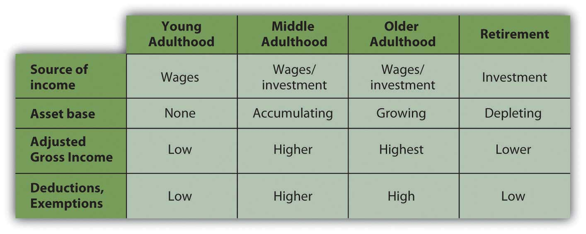

You may anticipate significant changes in income or expenses based on a change of job or career, or a change of life stage or lifestyle. Not only may the amounts of income or expenses change, but the kinds of incomes or expenses may change as well. Planning for those changes in relation to tax obligations is part of personal financial planning.
Tax obligations change more broadly as your stage of life changes. Although everyone is different, there is a typical pattern to aging, earning, and taxes, as shown in Figure 6.15 "Life Stages and Tax Implications".
Figure 6.15 Life Stages and Tax Implications
In young adulthood, you rely on income from wages, and you usually have yet to acquire an asset base, so you have little income from interest, dividends, or capital gains. Your family structure does not include dependents, so you have few deductions but also low taxable income.
As you progress in your career, you can expect wages, expenses, and dependents to increase. You are building an asset base by buying a home, possibly saving for your children’s education, or saving for retirement. Because those are the kinds of assets encouraged by the government, they not only build wealth but also create tax advantages—the mortgage interest deduction, retirement, or education savings exemption.
In older adulthood, you may begin to build an asset base that can no longer provide those tax advantages that are limited or may create taxable income such as interest, dividends, or rental income. In retirement, most people can anticipate a significant decrease in income from wages and a significant increase in reliance on incomes from investments such as interest, dividends, and gains. Some of those assets may be retirement savings accounts, such as an Individual Retirement Account (IRA) or 401(k) that created tax advantages while growing, but will create tax obligations as income is drawn from them.
Generally, you can expect your income to increase during your middle adult life, but that is when many people typically have dependents and deductions such as mortgage interest and job-related expenses to offset increased tax obligations. As you age, and especially when you retire, you can expect less income and also fewer deductions: any kids have left home, the mortgage in paid off.
The bigger picture is that at the stages of your life when income is increasing, so are your deductions and exemptions, which tend to decrease as your income decreases. Although your incomes change over your lifetime, you tax obligations change proportionally, so they remain relative to your ability to pay.
The tax consequences of such changes should be anticipated and considered as you evaluate choices for financial strategies. Because the tax code is a matter of law it does change, but because it is also a matter of politics, it changes slowly and only after much public discussion. You can usually be aware of any tax code changes far enough in advance to incorporate them into your planning.
Tax advantages are sometimes created for personal financial strategies as a way of encouraging certain personal goals. In the United States, as in most developed economies, certain goals such as home ownership, retirement savings, and education and health financing are seen as personal goals that benefit society as well as the individual.
In most cases, tax advantages are created to encourage progress toward those goals. For example, most people can buy a home only if they can use debt financing, which creates added costs. So mortgage interest, that added cost, is tax deductible (up to a limit) to make home financing and therefore home ownership more affordable and attractive.
Retirement saving is encouraged, so some savings plans such as an IRA or a defined contributionA tax-advantaged pension plan, such as a 401(k), that both employer and employee may contribute to and that does not pay an obligated or defined benefit at maturity. plan such as a 401(k) or a 403b (so named for the sections of the Internal Revenue Code that define them) create tax advantages. The deposits made to those plans may be used to reduce taxable income, although there are limits to the amount of those deposits. There are also retirement savings strategies that do not create tax advantages, such as saving outside of a tax-advantaged account. There are limited tax-advantaged savings accounts for education savings and health care expenses as well.
Where you have a choice, it makes sense to use a strategy that will allow you to make progress toward your goal and realize a tax advantage. Your enthusiasm for the tax advantage should not define your goals, however. Taxes affect the value of your alternatives, so recognizing tax implications should inform your choices without defining your goals.
Unanticipated events such as an inheritance, a gift, lottery winnings, casualty and theft losses, or medical expenses can also have tax consequences. They are often unusual events (and therefore unanticipated) and may be unfamiliar and financially complicated. In those circumstances it may be wise to consult an expert.
Your financial plans should reflect your vision for your life: what you want to have, how you want to get it, how you want to protect it. You will want to be aware of tax advantages or disadvantages, but tax consequences should not drive your vision. You would not buy a house with a mortgage only to get the mortgage interest deduction, for example. However, if you are buying a home, you can plan to do so in the most tax-advantageous way.
As Supreme Court Justice Oliver Wendell Holmes, Jr., said, “Taxes are what we pay for a civilized society.”U.S. Department of the Treasury, http://www.treas.gov/education/faq/taxes/taxes-society.shtml (accessed January 19, 2009). Like any costs, you want to minimize your tax costs of living and of life events, but tax avoidance is only a means to an end. You should make your life choices for better reasons than avoiding taxes.
“Friends and neighbors complain that taxes are indeed very heavy, and if those laid on by the government were the only ones we had to pay, we might the more easily discharge them; but we have many others, and much more grievous to some of us. We are taxed twice as much by our idleness, three times as much by our pride, and four times as much by our folly.”
Benjamin FranklinBenjamin Franklin, “As Certain as Death—Quotations About Taxes,” compiled and arranged by Jeffrey Yablon, in Tax Notes, January 5, 2004; retrieved from http://www.taxanalysts.com/www/features.nsf/Articles/B613CDAB6D2554218525770000641571?OpenDocument (accessed May 23, 2012).